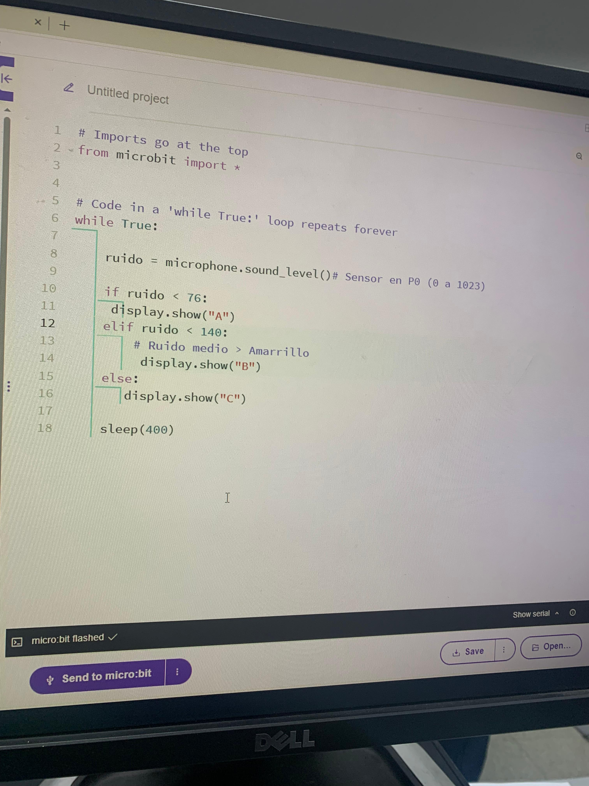
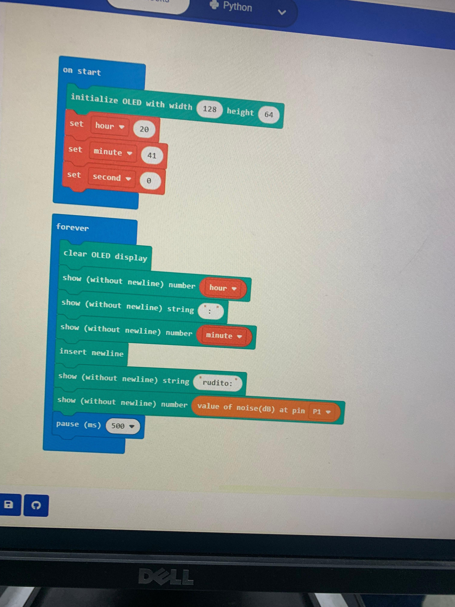
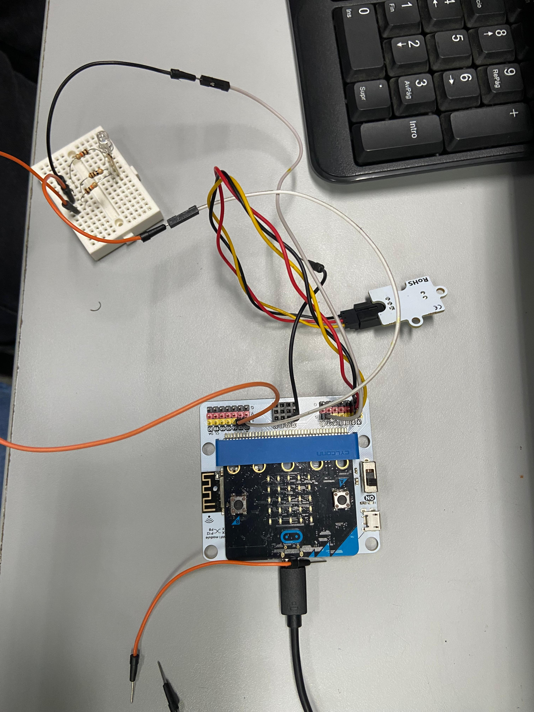

13 de agosto
El primer día de proyecto Decidimos el nombre del equipo el cual fue "Peñarol Inteligencia D1". Lo segundo fue decidir el proyecto, las propuestas eran, semáforo inteligente, regadora automática y sistema de alarma móvil, al final nos inclinamos por la primera opción la cual es "semáforo inteligente" este consiste en un sensor de sonido como base el cual emita luces indicando si el lugar donde está colocado es adecuado para el aprendizaje refiriéndonos al sonido. Para ello necesitamos una Microbit, un IoT kit del cual por ahora solamente tenemos pensado utilizar su sensor de sonido y IoT Bit, cableado y 3 luces led rojo, amarillo y verde.
20 de agosto
Este día se comenzó con la platilla de la página web, se avanzó en cada aspecto de esta, se determinó, diseño, forma de contenido, etc. Avanzamos con el documento de avance diario, se comenzó con la investigación con más profundidad sobre los materiales requeridos para silencio activo, se determinó que para hacer pruebas era más cómodo una pantalla led, y se estudió otro lenguaje de programación para poder aplicarlo a IoT Bit y Microit.
27 de agosto
Este día fue bastante importante ya que comenzamos con el ensamblaje básico del proyecto, en el cual determinamos que necesitábamos una protoboard lo cual no teníamos en cuenta, teníamos como faltante un led rojo y se comenzó a programar en python, se logro avances y un funcionamiento básico del proyecto. Empezamos utilizando una microbit v2 y terminamos utilizando microbit v1 por un error desconocido. También se avanzó con la platilla del proyecto.
